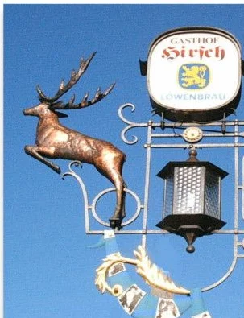
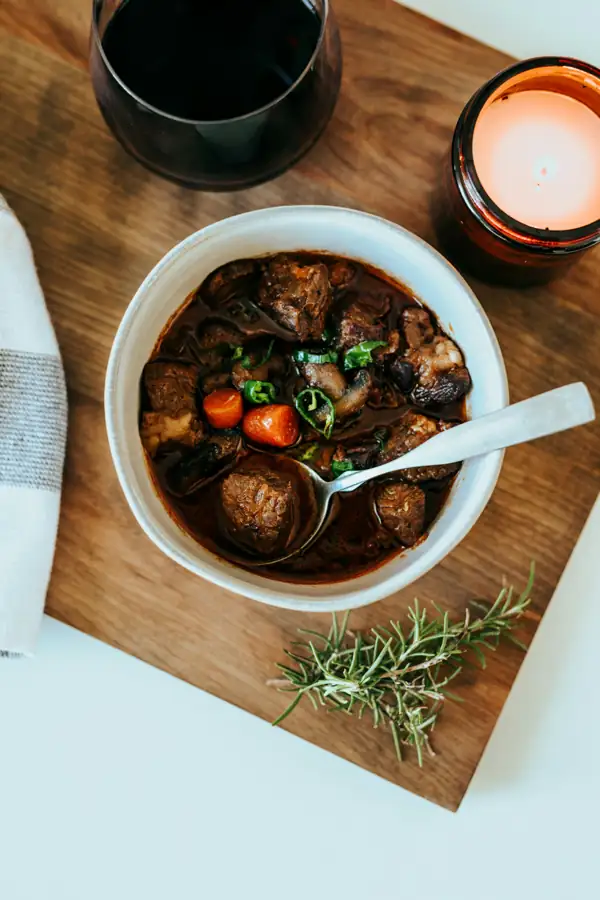
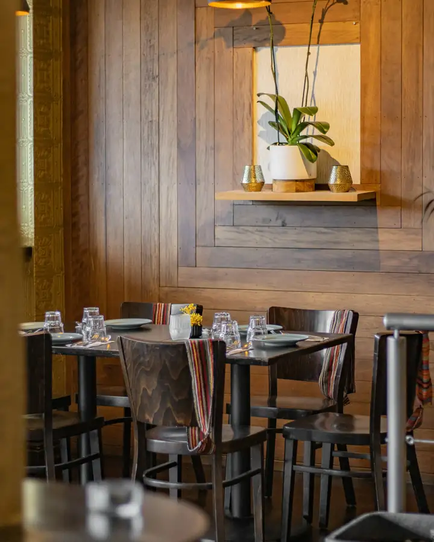
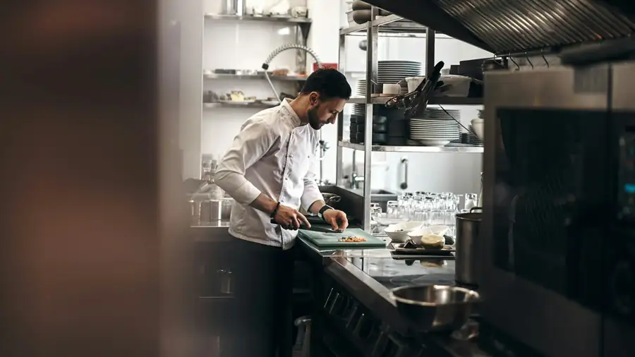
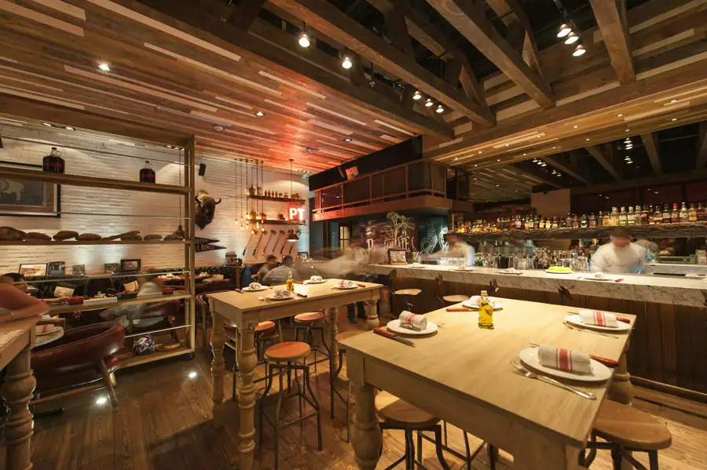
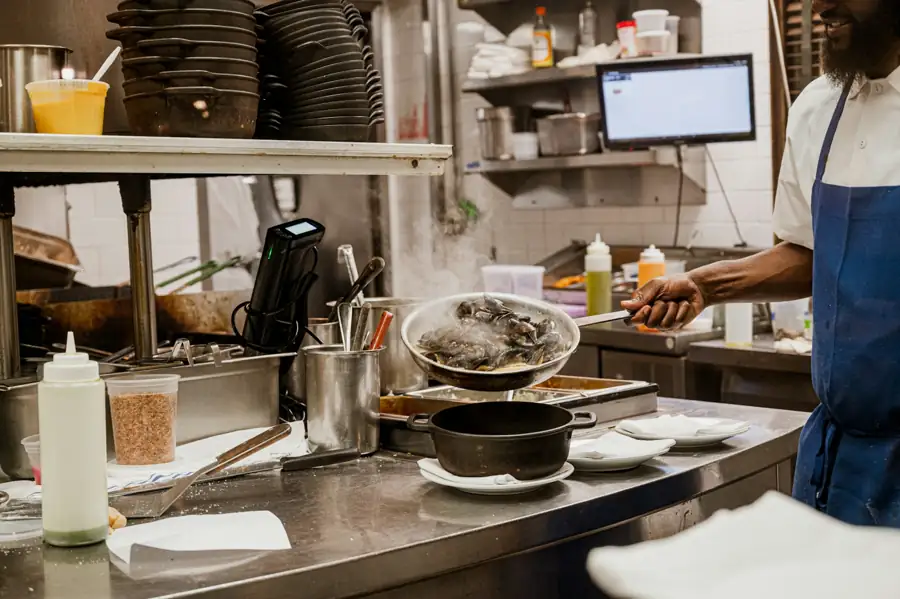
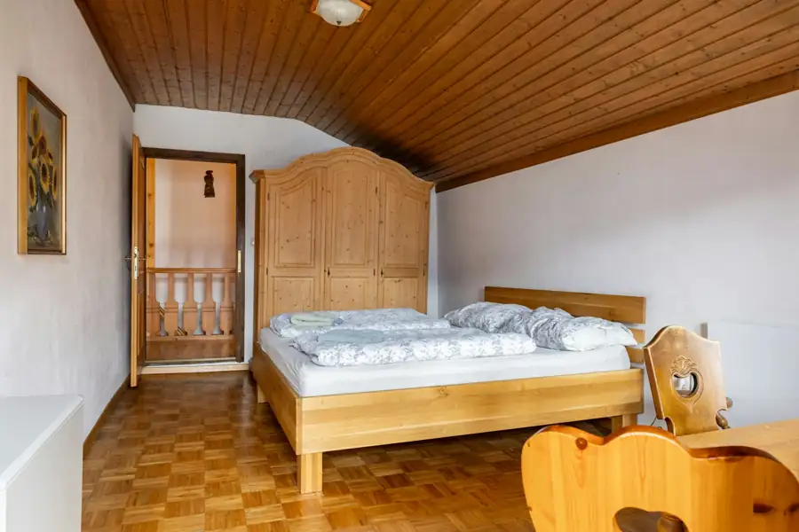
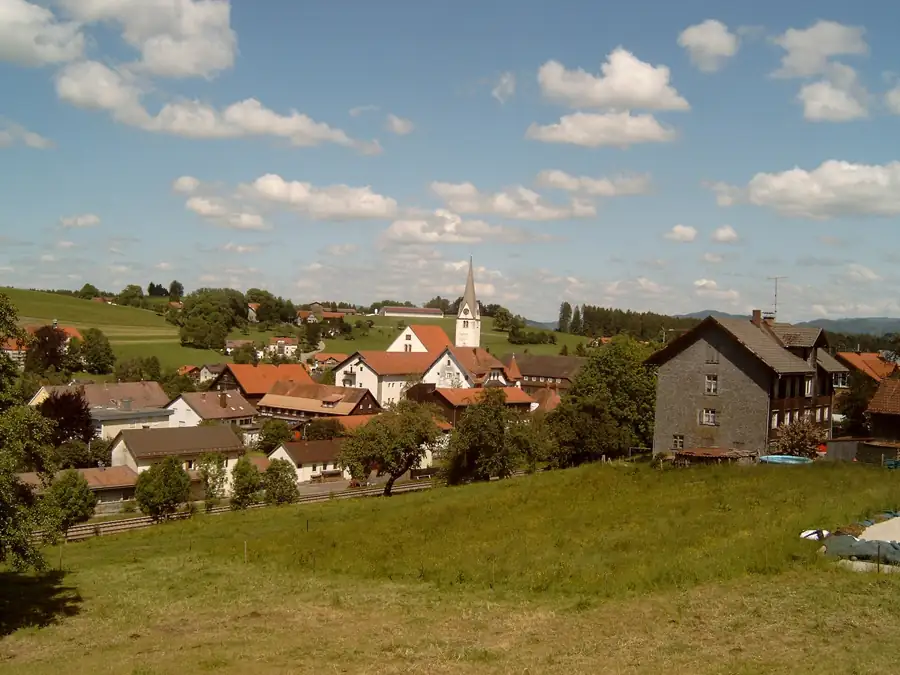
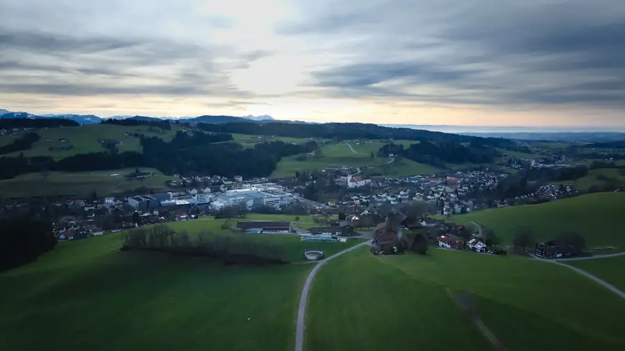

Gasthof · Heimenkirch im Westallgäu
Gut bürgerlich essen – unterm Hirschschild.
Familie Gaul kocht an der Lindauer Straße so, wie Gäste es lieben: Hirschgulasch mit selbstgemachten Spätzle, Schnitzel, Currywurst – reichlich und herzlich.
Öffnungszeiten siehe unten

Speisekarte & Tagesgerichte
Was heute auf der Tafel steht.
„Gut bürgerliches Essen“ – so steht es auf der bisherigen Website. Die Kreidetafel hier füllt die Familie selbst: Gericht und Preis in eine einfache Liste eintragen, die Seite zeigt es sofort so an.
Platzhalter: Eine Speisekarte mit Preisen liegt uns nicht vor. Die drei Gerichte oben stammen aus Gästebewertungen – ob sie ständig auf der Karte stehen, bitte bestätigen.

Von Gästen gelobt
- Hirschgulasch mit selbstgemachten SpätzleGästebewertung: „Absolut zart, einer tollen Sauce“Preis
- Schnitzelin Gästebewertungen oft genanntPreis
- Currywurstin Gästebewertungen oft genanntPreis
Heute empfiehlt die Küche
- Tagesgericht eintragenPreis
- Tagesgericht eintragenPreis
- Tagesgericht eintragenPreis
Stand: Datum · Fragen zu Allergenen? Einfach fragen.
Öffnungszeiten
Wann die Laterne brennt.
Mittags an fünf Tagen, abends am Mittwoch, Freitag und Samstag. Montag und Dienstag ist Ruhetag.
Quelle: bisherige Website und Visitenkarte des Gasthofs, Ruhetage zusätzlich laut Gemeinde Heimenkirch (abgerufen 23.11.2026). Feiertage/Betriebsurlaub ergänzen
- MontagRuhetag
- DienstagRuhetag
- MittwochMittag09:30–14:00Abend17:30–22:00
- DonnerstagMittag09:30–14:00Abendgeschlossen
- FreitagMittag09:30–14:00Abend17:30–00:00
- SamstagMittag09:30–14:00Abend17:30–00:00
- SonntagMittag09:30–14:00Abendgeschlossen
Gäste sagen
Auf dem Bierdeckel notiert.
4,7 von 5 Sternen aus 238 Google-Bewertungen (Stand 23.11.2026). Ein paar Stimmen, wörtlich aus öffentlichen Bewertungen übernommen.
„Wir haben hier das beste Hirschgulasch seit langem gegessen. Absolut zart, einer tollen Sauce und mit herrlichen, selbstgemachten Spätzle.“
„Saubere Gaststätte, Küche TOP. Freundliche und schnelle Bedienung.“
„Zum Schluss ein Schnaps oder Eis aufs Haus … wo bekommt man so etwas noch.“
„Wir kommen seit Jahren … voller Herzlichkeit“
„Essen reichlich und gut.“
Gaststube & Küche
Reinkommen, hinsetzen, wohlfühlen.
Hier gehören echte Fotos hin: die Gaststube, der Stammtisch, die Küche, das Schild bei Nacht. Eigene Fotos ergänzen – bis dahin Symbolbilder




Ihr Lieblingsfoto aus dem Gasthof
Foto ergänzen
Auch zum Übernachten?
Gästezimmer im Hirsch
Auf der Visitenkarte steht neben dem Gasthof ein Bett-Symbol, ein Verzeichnis führt den Hirsch auch als Pension. Ob und welche Zimmer vermietet werden, ist nicht bestätigt.
Zimmer bestätigen: Anzahl, Ausstattung, Preise sonst Abschnitt entfernen
Anfahrt
Lindauer Straße Nummer 1.
- Adresse
- Lindauer Straße 1, 88178 Heimenkirch
- Telefon
- 08381 7601
- Gastgeber
- Familie Gaul
- Hunde
- laut Verzeichnis erlaubt bitte bestätigen
- Parken
- Parkmöglichkeit ergänzen

